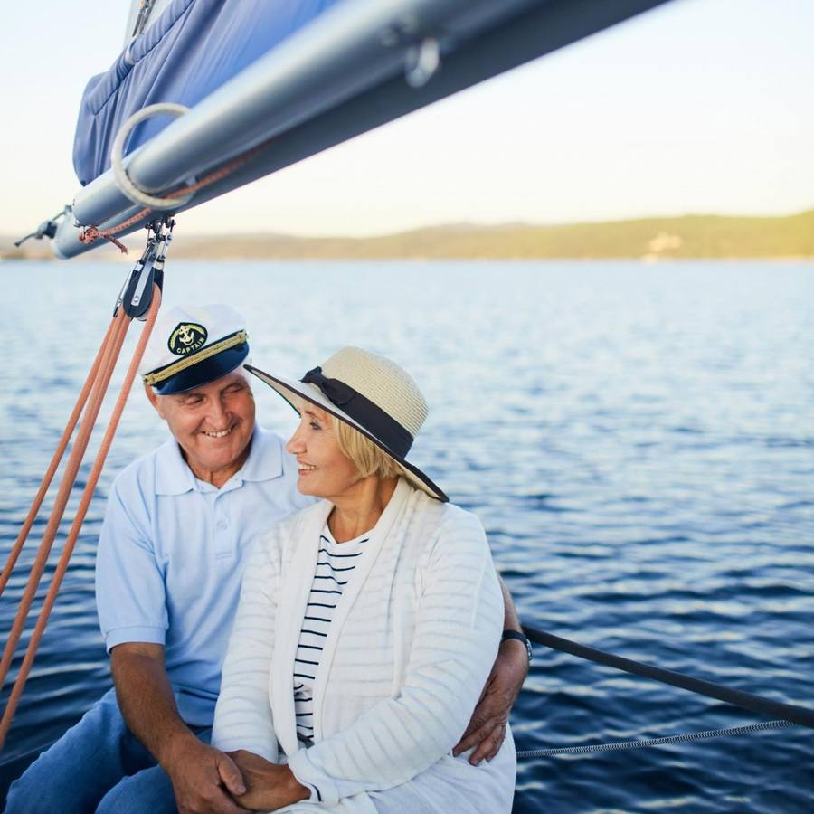
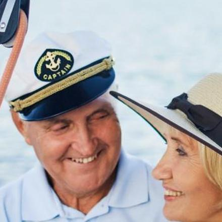

Μια σελίδα στο μενού, δίπλα στις εκδρομές. Ό,τι ξέρει ήδη το Kaiki (σκάφη, άνθρωποι, άδειες, λιμάνι) μπαίνει μόνο του και μένει πάντα σωστό. Την ιστορία και τις κριτικές τις γράφει ο διοργανωτής, με τα ίδια κομμάτια που έχει και η Αρχική.
Οικογενειακή επιχείρηση από τον Πειραιά. Βγάζουμε μικρές παρέες για κολύμπι, ψάρεμα και ηλιοβασιλέματα, με δικά μας σκάφη και δικούς μας κυβερνήτες.
1968η πρώτη βάρκα της οικογένειας
3σκάφη, όλα δικά μας
12άτομα το πολύ σε κάθε εκδρομή
4,9στην Google, από 380 κριτικές
Γράφει ο διοργανωτής · Ιστορία

Ο Γιώργος και η Ελένη, καλοκαίρι 2024
Η ιστορία μας
Ξεκινήσαμε με μια ψαρόβαρκα στη Σαλαμίνα
Ο παππούς μας ψάρευε ανάμεσα στη Σαλαμίνα και την Αίγινα από το 1968. Εκεί μάθαμε κάθε κάβο, κάθε σπηλιά και ποιος όρμος έχει νερά σαν πισίνα όταν φυσάει μελτέμι.
Το 2009 φτιάξαμε το πρώτο σκάφος για επισκέπτες. Σήμερα έχουμε τρία και βγαίνουμε κάθε μέρα από τον Απρίλιο ως τον Οκτώβριο. Οι παρέες μένουν μικρές, για να χωράνε όλοι στην πλώρη.

Γιώργος ΠαπαδάκηςΚυβερνήτης και ιδιοκτήτης
1968Η «Αγία Ειρήνη»Η ψαρόβαρκα του παππού, στο λιμανάκι της Σαλαμίνας.
1994Δίπλωμα κυβερνήτηΟ Γιώργος παίρνει το δίπλωμα και το πρώτο καΐκι.
2009Το «Θάλασσα»Το πρώτο μας σκάφος για επισκέπτες, 12 θέσεις.
2021Μαρίνα ΖέαςΜεταφερόμαστε στον Πειραιά. Έρχονται το «Αύρα» και το «Γαλήνη».
2026ΣήμεραΤρία σκάφη, πέντε άνθρωποι, 40 χιλιάδες επιβάτες ως τώρα.
Ιστορία νέο: χρονολόγιοΚείμενο, φωτογραφία, 5 χρονιές
⋮⋮
Κριτικές1 κριτική, βαθμός Google
+ Προσθήκη κομματιού
Γεμίζει μόνο τουαπό το Kaiki
Τα σκάφη μαςΑπό «Σκάφη»: φωτογραφία, άτομα, μήκος, άδεια
Οι άνθρωποί μαςΑπό «Ομάδα»: κυβερνήτες και ναύτες
Με φωτογραφίεςΌποιος δεν έχει, φαίνεται με τα αρχικά του
Άδειες και ασφάλειαΑπό τα στοιχεία επιχείρησης: ΜΗΤΕ, ΑΦΜ, άδειες σκαφών
Σημείο συνάντησηςΑπό «Λιμάνια»: το κύριο λιμάνι
Πέντε ερωτήσεις
Μια γραμμή για κάθε άνθρωπο;Το «Ξέρει κάθε σπηλιά της Αίγινας» δεν υπάρχει σήμερα. Θα μπει ένα πεδίο «Λίγα λόγια» στην «Ομάδα», προαιρετικό, σε ελληνικά και αγγλικά.
Φωτογραφίες ανθρώπων;Προτείνω ναι, με αρχικά για όποιον δεν έχει. Ο διακόπτης τις κρύβει όλες.
Μόνο κυβερνήτες ή και ναύτες;Τώρα δείχνει και τους δύο. Όσοι έχουν ειδικότητα «Άλλο» δεν φαίνονται.
Νέο κομμάτι «Χρονολόγιο»;Χρονιά, τίτλος και μια γραμμή. Θα υπάρχει και στην Αρχική.
Ξεχωριστή σελίδα;Προτείνω ξεχωριστή σελίδα στο μενού, όχι ένα ακόμα κομμάτι στην Αρχική.